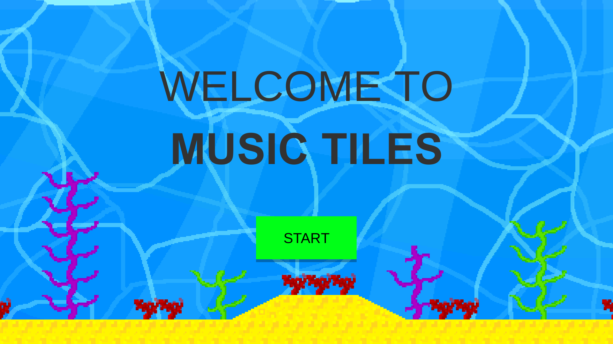
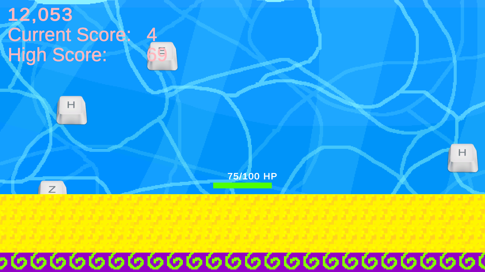
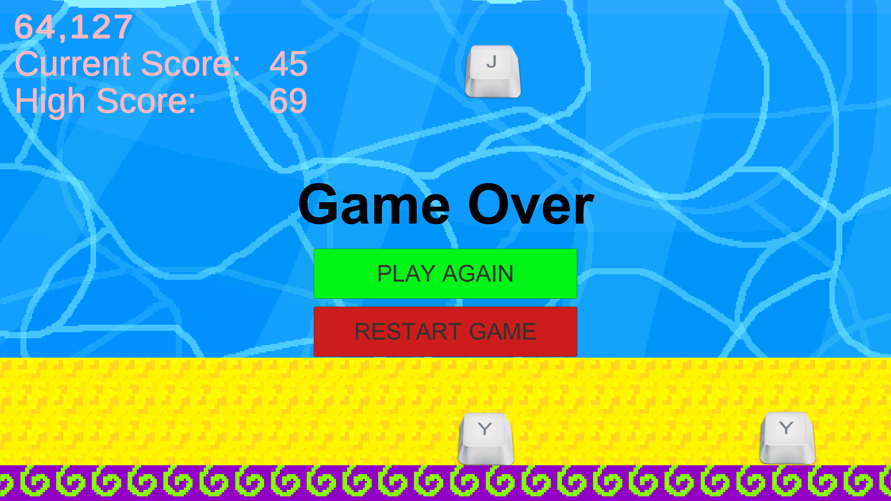
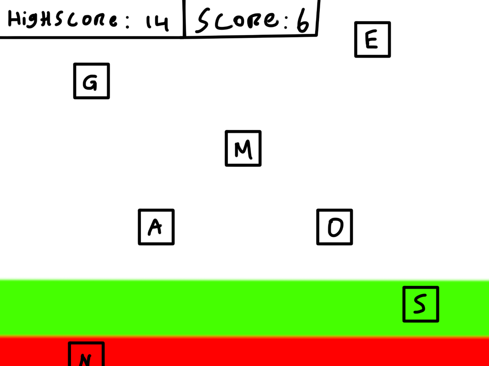

Music Tiles - prototype
About:
In the second term of my second year at Creative Media & Game Technologies, I created a game called Music Tiles for the Technical Prototyping module.
It is an arcade-style game with an unlimited mode.
This was the first game where I created everything myself; code, music, sprites, etc.
In this game, you have to type the right letters to make them disappear.
For this prototype, I focused on expanding my C# knowledge over the visuals.
Created by:

Engine:
Made in Unity
Platforms:
Windows, HTML5
Game:
Videos:
Screenshots:



Process:
Game concept
This game is a PC game where the player needs to press the right letter button at the right time; otherwise, they lose. The buttons come ‘falling’ down the screen, and when the button is in the area at the bottom of the screen, the player must press the right letter.My target audience is people between the ages of 45 and 55. These people know how to type, and most of them can type ‘blind’. This way, they can train their skills and speed.
The user will input letters like W, A, K, Y, S at the right time to let the game proceed. When a letter is missed, the player will get a Game Over.
Here is a rough sketch of what the final product looks like.

Building
I have created a prototype in Unity utilising the user's button inputs. The speed of the letters falling will define the difficulty. When the speed is faster, the player will have to press the buttons faster. The quantity of the letters will also influence the difficulty. How far apart the letters are horizontally can add some difficulty to the visibility. I can change the speed of the letters falling, how many letters are falling at the same time, and how far apart the letters are horizontally.Playtest
I have invited people in my target group to play the game. I have set up the laptop with the prototype without additional explanation and will tell them to try the game. Presumably, they would find out that they will need to give the right buttons as input. I have closely monitored their progress and emotions.I have changed the speed of the letters falling and how many letters are falling at the same time to see how it will change their behavior. I expected the testers to have a harder time when I increased the speed or quantity of the letters. I thought they would have to focus harder, and this would be visible by how closely they are looking at the screen and their body pose.
By seeing if the players would like to continue, I could measure whether the game is fun or challenging. I started by asking them their opinion, then I asked them a couple of questions I had prepared to see if I could get more specific information on their experience.
When the speed of the falling letters increased, my peer student tester seemed to be more focused. She was leaning forward, looking at the screen more intently, and at times missing more letters in the process. The number of falling letters at a time seemed a bit too difficult. The student adjusted quickly after a few rounds, but it might be too difficult for the target group.
The test went very well overall. After the feedback of the tester and close observation of their experience, I decided to lower the difficulty level afterwards, so the target audience will hopefully feel motivated enough to continue.
I asked three testers from my target audience: adults between 45 and 55 years old, who type often without looking at the keyboard. They were selected because the game is to practice your typing skills without getting bored. Every tester had a different extent of experience when it comes to playing games, which allowed me to see how casual as well as non-gamers within this target audience responded to the prototype.
My first tester is 48 and types as a matter of routine for work and is accustomed to blind typing. She has minimal gaming experience and plays puzzle games on her phone (Sudoku and Wordfeud).
My second tester is 55 and is an experienced blind typist with an extensive report and emailing history. He engages in some PC games and card games, but is not as practiced with fast reflex games.
The last tester is 50 and is an extensive computer user who is highly skilled in blind typing. He plays some strategy games on PC and is more accustomed to ideas of video games than the other two.
All three testers mentioned an obvious increase in difficulty when I increased the speed. At low speeds, they were comfortable and enjoyed the rhythm. At high speeds, tester 1 became overwhelmed very quickly, while testers 2 and 3 leaned forward and concentrated harder. Tester 3 adjusted the fastest, still managing to keep up quite well.
The number of letters was the most influential factor. Tester 1 struggled when multiple letters were on screen simultaneously and sometimes gave up and quit early. Tester 2 tried to keep up but made many mistakes, but seemed to have a great time and laughed over the chaos. Tester 3 did a little better but reported having too many letters on screen to be overwhelming and not fun.
Tester 1 said that the game was fun at slower paces but anxious when multiple letters appeared. She enjoyed replaying a few times but preferred shorter games.
Tester 2 described the game as fun and educational, especially because it used his typing skills. He found it challenging but exciting, and played several rounds by their own wanting.
Tester 3 enjoyed the game as being fun and addictive, particularly when the speed was increased incrementally. He did, however, report having too many letters on screen to be overwhelming and not fun.
Overall, the game was thought to be interesting and fun across the target group. Testers agreed that incremental scaling of difficulty is ideal, and too many letters at one time might take away from enjoyment. The replay value was strong because all three testers wanted to play again for some time to perform better.
Conclusion
The test revealed that the speed parameter is the most obvious method of adjusting difficulty for various players. The number of letters is a more difficult challenge, but threatens to overwhelm the target group if increased too rapidly. The game was playable and fun for new players, particularly since they easily understood the mechanics without explanation. What made it fun was the instant, direct feedback of a game-over screen if 4 letters were not recognized. This pushed the testers to do better next round. To further make the game more appealing to the target group, the introduction of a level system would provide more balance in challenge and fun.Overall, the test confirmed that the idea is viable and fun for both students and the target audience, yet adding features of progression and feedback would make the game more satisfying and engaging.
The test was successful overall. Both the student and the target group members understood the concept without needing too much explanation, which is a sign that the core mechanic is intuitive. The prototype was feasible enough to convey input complexity clearly, and the feedback I received was useful for observing how different players react to speed and amount variation.
Next time, I want to have a more structured sequence of levels of difficulty by having different difficult modes to choose from rather than manipulating the parameters by hand during the test. This would create a more organic experience for the testing and would give me more predictable feedback. With this level system, I can more effectively measure engagement over time rather than asking for opinions.
Next time, I would like to implement:
- A scoring system, so that players can track progress and be rewarded.
- Gradual difficulty scaling, so that the difficulty rises smoothly instead of suddenly.
- A level system with levels of difficulty by having different difficulty modes to choose from.
- More variation in inputs: not just letters but characters and numbers as well, to make it more engaging for longer gameplay.
- Greater visual feedback upon a correct key being hit, like a burst of color or sound effect, to reward the player and make the game feel more responsive.
During this project, I learned a lot about Game Design, Level Design, Unity, C#, Prototyping and Gathering and Applying Feedback
Link:
Download it for free on my Itch page!
Look at this page on your laptop/pc to play or download the Windows version for free on my Itch page!